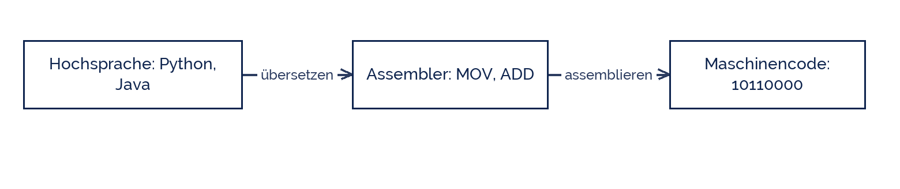

shogun
shogun
Good morning!
Nur das Schöne wird die Welt retten!
Fjodor Dostojewski
Nicht verzagen, Doc Alvers fragen!
Informatik — Grundkurs 12
Die Schnittstelle Mensch–Maschine
Syntax und Semantik, Compiler und Interpreter — und ein Blick zurück
Nicht verzagen, Doc Alvers fragen!
Kapitel 01
Zwei Begriffe
Syntax und Semantik
Nicht verzagen, Doc Alvers fragen!
Der Unterschied
| Syntax | Semantik | |
|---|---|---|
| regelt | welche Zeichenfolgen erlaubt sind | was sie bedeuten |
| Vergleich | Rechtschreibung und Grammatik | der Sinn des Satzes |
| Fehler heißt | Syntaxfehler | Logikfehler |
| fällt auf | vor dem Start | erst am falschen Ergebnis |
„Der Hund fliegt das Fahrrad“ ist syntaktisch korrekt und semantisch Unsinn
Der Rechner tut, was dasteht — nicht, was gemeint war
Nicht verzagen, Doc Alvers fragen!
Die drei Fehlerarten
Syntaxfehler: das Programm startet nicht. Harmlos, weil er sofort auffällt
Laufzeitfehler: das Programm bricht mitten drin ab — Division durch null, fehlende Datei
Logikfehler: es läuft durch und liefert das falsche Ergebnis
Nur der dritte ist gefährlich — ihn findet kein Übersetzer, nur ein Test
Deshalb gehört zu jedem Programm ein Testfall mit bekanntem Sollwert
Nicht verzagen, Doc Alvers fragen!
Kapitel 02
Übersetzen
Compiler, Interpreter und die Ebenen dazwischen
Nicht verzagen, Doc Alvers fragen!
Von der Hochsprache zur Maschine
Jede Ebene nach rechts ist maschinennäher, jede nach links menschennäher
Unten steht immer die CPU — sie kennt nur Zahlen

Nicht verzagen, Doc Alvers fragen!
Compiler und Interpreter
| Compiler | Interpreter | |
|---|---|---|
| übersetzt | einmal das ganze Programm | Zeile für Zeile beim Ausführen |
| Ergebnis | eine ausführbare Datei | keine Datei, direkte Ausführung |
| Fehler zeigt er | vor dem Start, alle auf einmal | wenn die Zeile erreicht wird |
| Geschwindigkeit | schneller beim Laufen | langsamer, dafür sofort startbar |
| Beispiel | C, Java (in Bytecode) | Python, JavaScript |
Die Grenze ist unscharf: Java übersetzt in Bytecode, den dann eine virtuelle Maschine ausführt
Moderne Systeme übersetzen zur Laufzeit nach — das heißt Just-in-Time
Nicht verzagen, Doc Alvers fragen!
Kapitel 03
Ein Blick zurück
Wie die Sprachen wurden, was sie sind
Nicht verzagen, Doc Alvers fragen!
Meilensteine
| Jahr | Sprache | brachte |
|---|---|---|
| 1957 | Fortran | die erste verbreitete Hochsprache |
| 1959 | COBOL | Sprache für kaufmännische Anwendungen |
| 1972 | C | systemnah und trotzdem portabel |
| 1991 | Python | Lesbarkeit als Entwurfsziel |
| 1995 | Java | einmal schreiben, überall ausführen |
Grace Hopper entwickelte 1952 den ersten Compiler — und prägte den Gedanken der Hochsprache
Der Trend über 70 Jahre: weg von der Maschine, hin zum Menschen
Nicht verzagen, Doc Alvers fragen!
Dieselbe Rechnung, zwei Ebenen
# Hochsprache summe = a + b # Assembler (sinngemaess) # MOV AX, a # ADD AX, b # MOV summe, AX
Nicht verzagen, Doc Alvers fragen!
Syntax ist die Form, Semantik der Sinn. Ein Syntaxfehler kostet Minuten, ein Logikfehler kostet Vertrauen.
Merksatz
Nicht verzagen, Doc Alvers fragen!
Fun Facts: Programmiersprachen
Grace Hopper schrieb 1952 den ersten Compiler — viele hielten die Idee für unmöglich
COBOL läuft bis heute in Banken — Milliarden Zeilen sind noch im Einsatz
Python ist nach Monty Python benannt, nicht nach der Schlange
Es gibt über 700 dokumentierte Programmiersprachen — benutzt werden ein paar Dutzend
Der Hello-World-Vergleich ist der älteste Sport der Informatik
Nicht verzagen, Doc Alvers fragen!
Eure Aufgabe
Ordnet fünf Fehlermeldungen den drei Fehlerarten zu
Findet je ein Beispiel für einen syntaktisch korrekten, semantisch falschen Satz
Erklärt an einem Beispiel den Unterschied Compiler und Interpreter
Recherchiert eine Sprache aus der Zeitleiste: wofür wurde sie gebaut?
Schreibt drei Sätze: Warum gibt es überhaupt so viele Sprachen?
Nicht verzagen, Doc Alvers fragen!